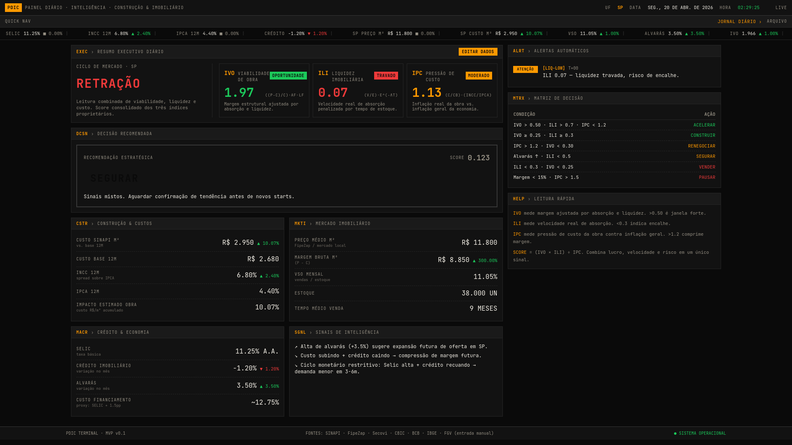

PDIC Market Compass
Sinais de mercado transformados em índices, alertas e recomendações territoriais rastreáveis.
O Painel Diário de Inteligência da Construção e Imobiliário reúne dados informados, fontes públicas e histórico para apoiar decisões como acelerar, construir, segurar, renegociar, pausar ou vender.
- Índices
- IVO, ILI e IPC
- Fontes validadas
- BCB, G1, SINAPI e PNADC
- Horizontes
- 30, 90 e 180 dias
- Base técnica
- React, Supabase e PWA
Abrir PDIC ↗
O repositório permanece privado; a aplicação pública pode ser examinada.